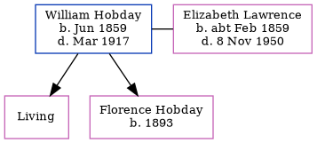

William Pitcher Hobday 1859 - 1917
[ Home ] | [ Calendar ] | [ Surnames Index ] | [ Errors ] | [ Family History ]William Hobday, the husband of Elizabeth Lawrence (the great-great-aunt of Nigel Horne), was born in Ramsgate, Kent, England in Jun 18591,2,3,4,5,6 and married Elizabeth (with whom he had 2 children: Ethel Elizabeth and Florence Evelyn, along with 1 surviving child) in St Lawrence, Thanet, Kent, England on 19 Mar 1882.
During his life, he was living at his birthplace in 18611 and in 18712; in St Lawrence in 18813 and in 19014; at Lorne Road, St Lawrence in Thanet on 31 Mar 19017; and at Bloomsbury Road in Ramsgate on 2 Apr 19118.
He died in Mar 1917 in Thanet5.
Children
- Florence Evelyn was born in 1893
Citations
- 1861 England Census Online publication - Provo, UT, USA: The Generations Network, Inc., 2005.Original data - Census Returns of England and Wales, 1861. Kew, Surrey, England: The National Archives of the UK (TNA): Public Record Office (PRO), 1861. Data imaged from the National (Relation to Head of House: Son)
- 1871 England Census Online publication - Provo, UT, USA: The Generations Network, Inc., 2004.Original data - Census Returns of England and Wales, 1871. Kew, Surrey, England: The National Archives of the UK (TNA): Public Record Office (PRO), 1871. Data imaged from the National (Relation to Head of House: Son)
- 1881 England Census Online publication - Provo, UT, USA: The Generations Network, Inc., 2004. 1881 British Isles Census Index provided by The Church of Jesus Christ of Latter-day Saints © Copyright 1999 Intellectual Reserve, Inc. All rights reserved. All use is subject to the (Relation to Head of House: Lodger)
- 1901 England Census Online publication - Provo, UT, USA: The Generations Network, Inc., 2005.Original data - Census Returns of England and Wales, 1901. Kew, Surrey, England: The National Archives of the UK (TNA): Public Record Office (PRO), 1901. Data imaged from the National (Relation to Head of House: Head)
- England & Wales, Death Index: 1984-2005 Online publication - Provo, UT, USA: The Generations Network, Inc., 2007.Original data - General Register Office. England and Wales Civil Registration Indexes. London, England: General Register Office. © Crown copyright. Published by permission of the Cont
- England & Wales, FreeBMD Birth Index, 1837-1915 Online publication - Provo, UT, USA: The Generations Network, Inc., 2006.Original data - General Register Office. England and Wales Civil Registration Indexes. London, England: General Register Office. © Crown copyright. Published by permission of the Cont
- 1901 England, Wales & Scotland Census - Findmypast (was age 41 and the head of the household)
- 1911 Census for England & Wales - Findmypast (was age 49 and the head of the household)
Media
1911 Census for England & Wales - GBC/1911/RG14/04526/0257/1
Family Tree
Map
Generated by ged2site. Last updated on Jul 3, 2024
Known Issues
Marriage date (19 Mar 1882) has no citations
Mar 31, 1901: not living at same address as spouse Elizabeth Lawrence ('Lorne Road, St Lawrence, Thanet, Kent, England'/'3 Lorne Road, St Lawrence, Thanet, Kent, England')
Elizabeth Hobday (née Lawrence) residence is same location probably should be recorded as the same address (' 3 Lorne Road, St Lawrence, Thanet, Kent, England'/' Lorne Road, St Lawrence, Thanet, Kent, England') in 1901
Apr 2, 1911: not living at same address as spouse Elizabeth Lawrence ('Bloomsbury Road, Ramsgate, Kent, England'/'16 Bloomsbury Road, Ramsgate, Kent, England')
Elizabeth Hobday (née Lawrence) residence is same location probably should be recorded as the same address (' 16 Bloomsbury Road, Ramsgate, Kent, England'/' Bloomsbury Road, Ramsgate, Kent, England') in 1911
No records of living with anyone
Unknown event type: Custom Marriage
Census information missing between 1881 England Census and Census UK 1901